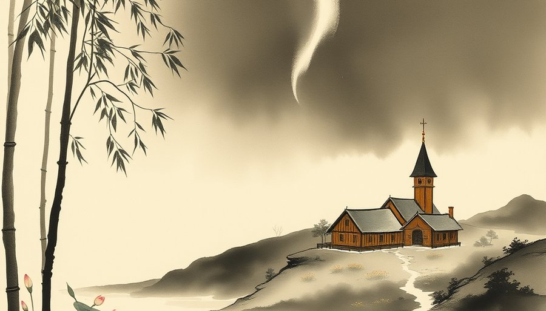
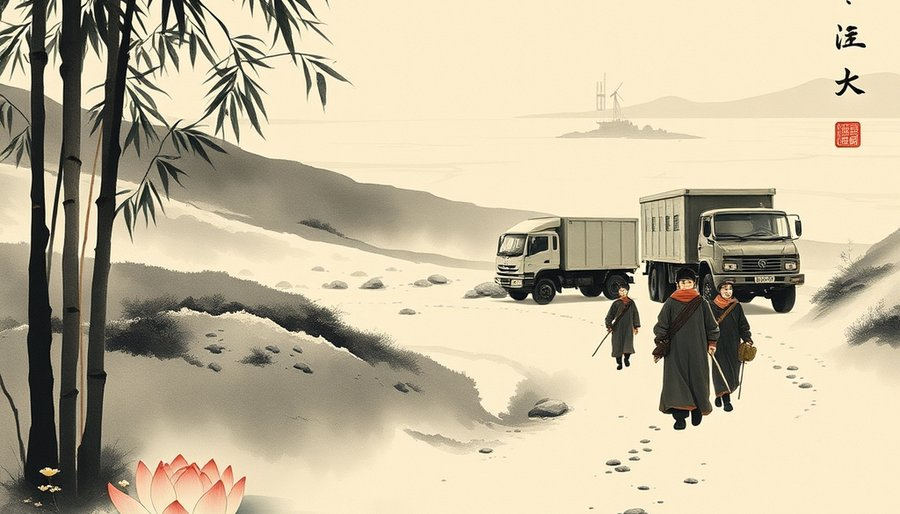
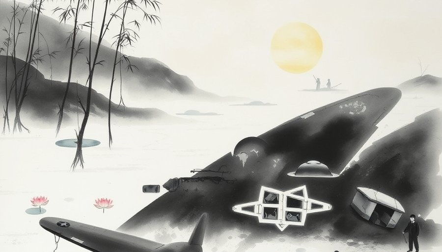

红胡子埃里克在985年抵达这片海岸时，看到的是短暂的夏季绿意。他因杀人被从冰岛流放三年，带着船队向西航行，发现了这片未知的土地。他沿着海岸探索，找到了几处适合放牧的峡湾。他把它叫作格陵兰，意思是绿地。在此之前，因纽特人的祖先已经在这里生活了数千年，他们属于拓乐文化，叫它“人类的土地”。埃里克的名字传回欧洲，吸引了一批又一批移民。他们在西南海岸建起农场和教堂，定居点一度发展到数千人，有两百多个农场，甚至还有一座主教教堂。考古学家后来在这里找到了教堂的石基和铁制工具，证明北欧人曾在此扎根。他们与欧洲进行海象牙和毛皮贸易，换取铁器和谷物。
但绿地并不绿。格陵兰的面积是216万平方公里，约80%被冰盖覆盖，冰层最厚处超过三千米，海岸线近五万公里。北大西洋的寒风和漫长的极夜让农业只能在边缘挣扎。北欧定居者在这里生活了大约五百年，然后消失了。他们为什么离开，为什么没有留下后人，至今没有确切答案。有人推测是小冰期让气候变得更冷，牧场被冰封；有人说是与因纽特人的冲突，因纽特人向东扩张，挤压了北欧人的生存空间；也有人认为是贸易路线中断，欧洲不再需要海象牙。唯一确定的是，那片曾经有教堂钟声的海岸重新归于寂静。考古学家在冻土中发现了北欧人的遗骸，显示他们最后的日子可能极其艰难。
因纽特人留了下来。他们适应了冰原，用皮划艇捕猎海豹，在极夜里点起海豹油灯。他们的村庄散布在海岸线上，人口虽少，却从未离开。但他们的土地很快会被另一批外来者重新标注。
格陵兰叫绿地，冰岛叫冰岛。但冰岛的气候远比格陵兰温和。名字和现实，从一开始就反着来。

1721年，挪威传教士汉斯·埃格德抵达格陵兰，试图寻找北欧定居者的后裔。他没有找到，却开启了新一轮殖民。1774年，丹麦皇家贸易公司垄断了格陵兰的贸易，原住民被纳入殖民体系。1814年，基尔条约把格陵兰划给了丹麦。这块远离欧洲的巨岛成为丹麦的殖民地，后来又正式并入丹麦王国。岛上的人没有参与这场谈判，他们甚至不知道自己的土地已经被写进了条约。
1940年，纳粹德国占领丹麦。美国援引门罗主义，以保护西半球为由，与丹麦流亡政府达成协议，进驻格陵兰。美军在这里建起机场和气象站，把这座岛变成了北大西洋的哨所。二战结束后，美国没有离开。1946年，杜鲁门政府向丹麦出价一亿美元，想买下这座岛。当时冷战刚刚开始，北极成为美苏对峙的最短路径。丹麦拒绝了，但五年后，一份新的防务协议给了美国想要的东西：驻军权。
1951年，美丹防务协议签署。美国在格陵兰西北部建起了图勒空军基地，后来改名为皮图菲克太空基地。这是冷战最前沿的堡垒，轰炸机从这里起飞，可以直抵苏联腹地。基地的雷达站也是北美弹道导弹预警系统的一部分。协议允许美国在格陵兰任何地方建立军事设施，无需丹麦事先同意。为了扩建基地，丹麦政府在1953年强迫附近的因纽特村民迁离家园。数十户卡纳克村的居民被告知，他们必须搬走，没有商量余地。他们在极寒中被卡车运到一百三十公里外的卡纳克镇，留下的只有冻土上的房基。新定居点缺乏足够的猎物，生活比原来艰难得多。几十年后，丹麦政府为此道歉，但村民始终未能返回故地。1999年，丹麦最高法院判决迁村非法，但土地已被基地占用，无法归还。
土地没有被买走，却被使用了。岛上的人没有被询问，却被移动了。

1968年1月21日，一架美国B-52轰炸机从图勒基地起飞，执行冷战时期的“铬穹顶”任务。机上载着四颗氢弹，每颗的威力是广岛原子弹的一百倍以上。任务要求轰炸机不间断巡航，确保美国在任何时候都能发动核反击。这种巡航从1961年开始，持续了七年，共有十二架B-52随时在空中。坠毁事件是其中最严重的一次事故。
飞机升空后不久，机舱加热器故障引发火灾。机组试图返回基地，但浓烟迫使他们弃机。七人跳伞逃生，落在冰原上，被救援队救起。一人死亡，他的遗体后来在机舱残骸中被找到。飞机坠毁在基地附近的冰面上，四颗氢弹的常规炸药在撞击中爆炸。核弹头破裂，放射性钚和氚散落在冰上。虽然没有发生核爆炸，但污染范围达数平方公里。美军随后展开“自由冰”清理行动，数百名人员用了九个月时间铲走受污染的冰雪，总计清除约两万三千立方米。但据解密文件，其中一颗氢弹的核部件可能至今仍沉在冰层下，未被找到。2008年，BBC报道称，美国军方在坠毁后不久就放弃了寻找那枚核弹，它可能已沉入冰下数百米。
丹麦一直奉行无核政策，禁止核武器进入其领土。但冷战期间，美国载着核弹的飞机在图勒基地起降了数千次，丹麦政府保持了缄默。坠毁事件后，丹麦的抗议也仅限于外交照会。直到1995年，解密文件才显示，丹麦首相曾在1957年秘密同意美国核武器进入格陵兰。那块可能还埋着氢弹的冰，成了冷战留在格陵兰身上最深的一道伤口。2000年后，科学家在格陵兰冰芯中检测到来自坠毁的放射性物质，提醒着人们那场事故从未真正结束。
2009年，格陵兰获得自治权，外交和国防仍由丹麦掌控。格陵兰语成为官方语言，议会可以决定大部分内部事务。但经济上，格陵兰严重依赖丹麦的年度补贴，约占政府预算的一半。独立之路并不容易。冰盖融化让矿产和石油资源变得可及，稀土、铀、铁矿石吸引着外国资本。中国公司曾试图投资格陵兰的稀土矿，但被丹麦和美国联手阻止。2021年，格陵兰新政府上台后，以环境担忧为由暂停了铀矿开发，独立的经济基础再次动摇。
2024年，格陵兰议会宣布独立为最终目标。岛上的人开始问：我们能不能自己决定自己的事？但大国没有停止惦记。2019年，美国总统特朗普提出购买格陵兰，丹麦首相说“荒谬”。特朗普随后取消了访问丹麦的行程。2025年，特朗普再次提出购买，格陵兰总理穆特·埃格德回应“格陵兰不是商品”。2026年9月22日，丹麦、格陵兰、美国三方签署了一份安全协议，将北极安全事务移交北约监管。路透社报道，协议的具体条款没有公开，是否修改了1951年的防务协议，外界不得而知。北极的安全格局正在变化，俄罗斯和中国加强了在北极的存在，北约希望格陵兰成为新的支点。
这一次，格陵兰的旗帜与丹麦、美国的旗帜并列在签字桌上。但协议的内容，岛上的人依然只能从新闻里得知。格陵兰的总理坐在签字桌旁，这是历史上第一次。但协议的核心内容仍然由华盛顿和哥本哈根决定。岛上的冰盖还在融化，北极航道正在打开，稀土和石油藏在冰下。这一次，岛上的人依旧在问：我们想要什么，有人听吗？
余波
1968年坠毁事件后，丹麦和美国对核污染的处理长期保密。直到1995年，丹麦政府才承认曾允许美国核武器进入格陵兰。2026年的三方协议被一些观察者视为“新防务协议”的替代品，但官方未予证实。格陵兰的独立进程仍在继续，但岛上的五万六千人说，他们最怕的不是寒冷，而是被遗忘在谈判桌的边缘。
小汪老师的成长观察笔记